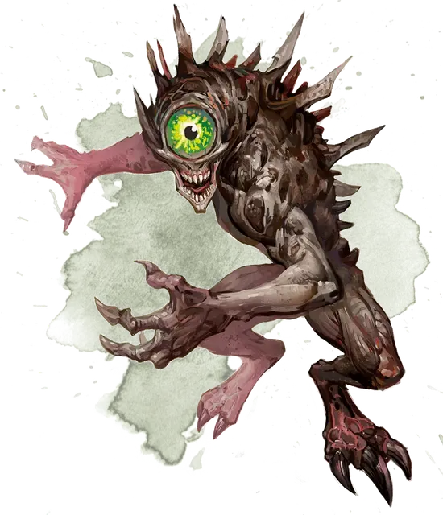

Нотик
Nothic
Средняя Аберрация, нейтрально-злая

Класс Доспеха 15 (природный доспех)
Хиты 45 (6к8 + 18)
Скорость 30 футов
| мод | спас | ||
|---|---|---|---|
| СИЛ | 14 | +2 | +2 |
| ЛОВ | 16 | +3 | +3 |
| ТЕЛ | 16 | +3 | +3 |
| мод | спас | ||
|---|---|---|---|
| ИНТ | 13 | +1 | +1 |
| МДР | 10 | +0 | +0 |
| ХАР | 8 | −1 | −1 |
Навыки Восприятие +2, Магия +3, Проницательность +4, Скрытность +5
Чувства истинное зрение 120 футов, пассивное Восприятие 12
Языки Подземный
Опасность 2 (450 опыта)
Бонус мастерства +2
Среда обитания Подземье
Особенности
Острое зрение. Нотик совершает с преимуществом проверки Мудрости (Восприятие), основанные на зрении.
Действия
Мультиатака. Нотик совершает две атаки когтями.
Когти. Рукопашная атака оружием: +4 к попаданию, досягаемость 5 футов, одна цель. Попадание: Рубящий урон 6 (1к6 + 3).
Разлагающий взгляд. Нотик выбирает одно существо в пределах 30 футов, которое он может видеть. Цель должна преуспеть в спасброске Телосложения Сл 12 от этой магии, иначе она получит урон некротической энергией 10 (3к6).
Мистическая проницательность. Нотик выбирает одно существо в пределах 30 футов, которое он может видеть. Цель должна противопоставить свою проверку Харизмы (Обман) проверке Мудрости (Проницательность) нотика. Если нотик победит, он узнает один секрет или факт о существе. Цель автоматически побеждает, если обладает иммунитетом к очарованию.
Описание
Зловещий глаз, смотрящий из тьмы, сверкает извращенным интеллектом и пугающей злобой. Большую часть времени нотики довольствуются подсматриванием, взвешиванием шансов и оценкой существ, с которыми они сталкиваются. Если же дело доходит до схватки, они пускают в ход свой ужасающий взгляд, от которого плоть их врагов сгнивает до костей.
Проклятые маги. Некоторые волшебники, посвятившие свои жизни открытиям магических секретов, вместо обретения искомого ими богоподобного превосходства, превращаются в жалких, измученных темным проклятьем чудовищ. Это проклятье оставил Векна, могучий лич, который в некоторых мирах из нежити превратился в бога тайн. Нотики не сохраняют после превращения никакой памяти о том, кем они были при жизни, но рыщут в местах скопления магических знаний, куда их тянут смутные воспоминания и порывы, которые они не в состоянии понять до конца.
Темные оракулы. Нотики обладают странным даром волшебного прозрения, который позволяет им извлекать знания из памяти других существ. Это даёт им выходящие за всякие рамки знания секретов и тайн, которыми они с удовольствием поделятся за определенную цену. Обычно утолить жадность нотика можно подарком, вроде магического предмета.
Обитатели магических мест. Часто нотики проникают в академии волшебства и другие места, богатые магическими знаниями. Их ведет призрачная надежда на то, что в таких местах найдется метод вернуть им их прежнее тело. Это не осознанная цель, а скорее маниакальная тяга, витающая где-то на окраинах их сознания. Впрочем, некоторые нотики сохранили достаточно ума, чтобы осознать, что это всего лишь часть странного воздаяния за их безрассудство — ложная надежда, которая толкает их далее искать тайные знания.